Hi, I'm Evie! I'm a fourth year student at the University of Wisconsin, Eau Claire studying communications with a multimedia minor. I currently work as a communications intern at Barr Engineering Co., where I am working to gain hands-on experience in internal and external content creation, social media, and graphic design.
I also currently serve as an Academic Assistant for an upper division multimedia design class. In this role, I help students find creative approaches to visual design using Adobe suites. Additionally, I assist in course planning and host out-of-class office hours for student drop-ins.
My passions include visual arts and design, writing, environmental justice and conservation, and solution-based storytelling.
About Me
I’ve always loved the arts. As a kid, I would spend all of my time sitting with Crayola Crayons and doodling dinosaurs. That love for art has evolved (so to speak) into a passion for composition, design, and creativity. I strive to apply creative touches to all that I do. This translates to how I write, how I work, and how I solve problems.
In my free time, I enjoy going on walks, making jewelry, and doing art. My favorite form of art is pen to paper, and I take this approach in the majority of my designs. My entire life, I’ve been a fan of keeping things classic, and strive to integrate hand-drawn work into my designs. When I’m not doing art or walking, I enjoy climbing, making music, and spending time with friends.
Work Experience
Barr Engineering Co.
Communications Intern
SKILLS: social media management, graphic design, organizational communications, article writing, InDesign
Design Across Principals
Academic Assistant
SKILLS: graphic design, Adobe Illustrator, Adobe InDesign, leadership, teaching
Multicultural Student Services
Communications Intern
SKILLS: Canva, Blugold Connect +, graphic design, event photography, visual arts
Gallery
Graphic Design

 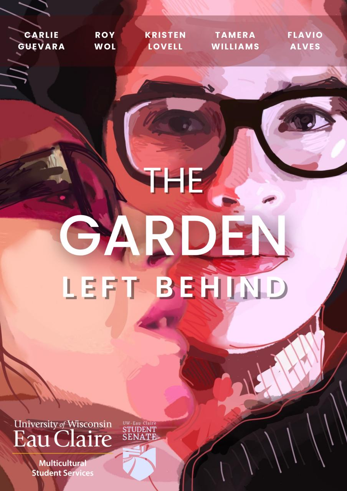
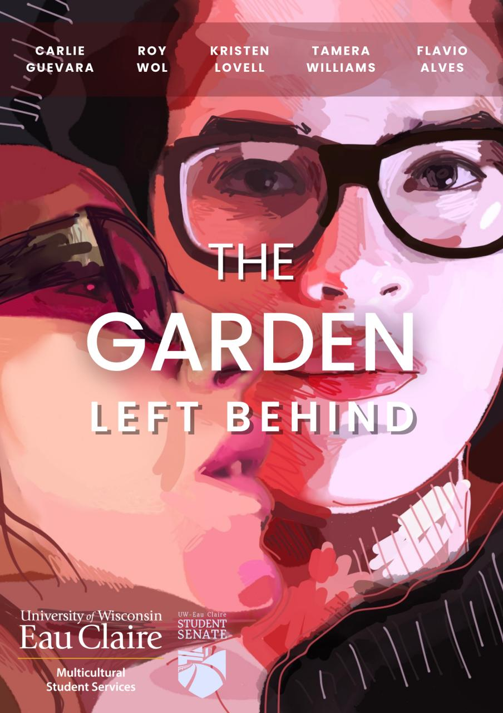


Artwork
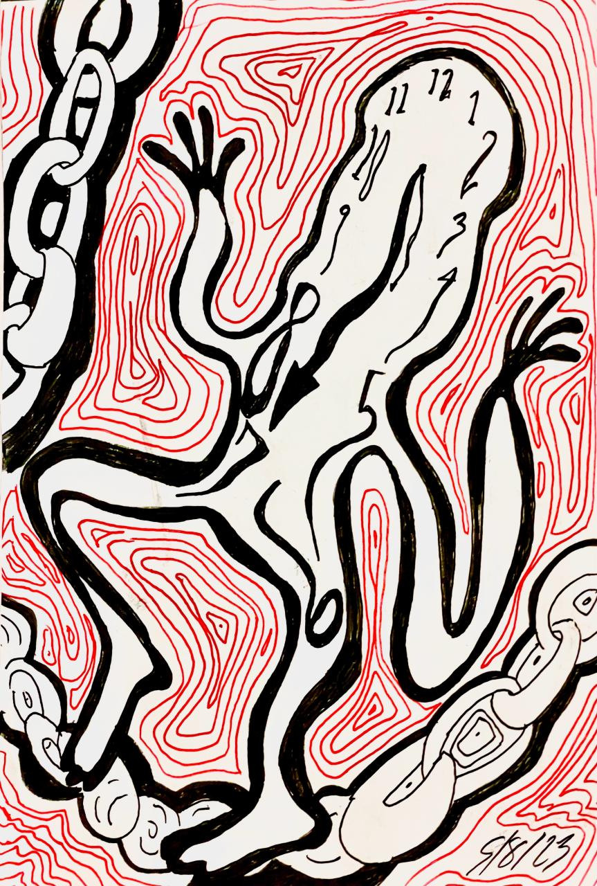 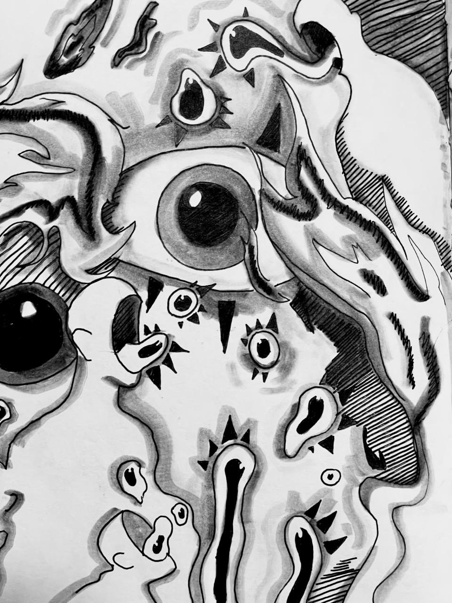 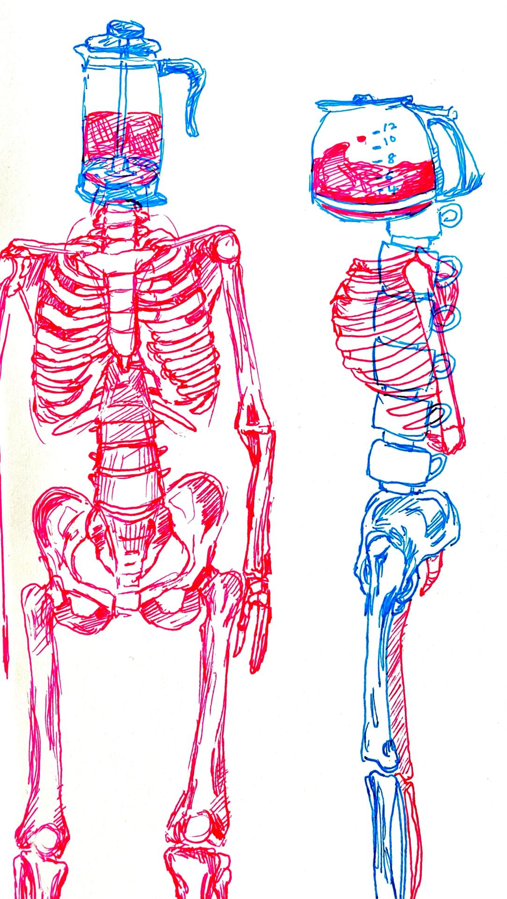
 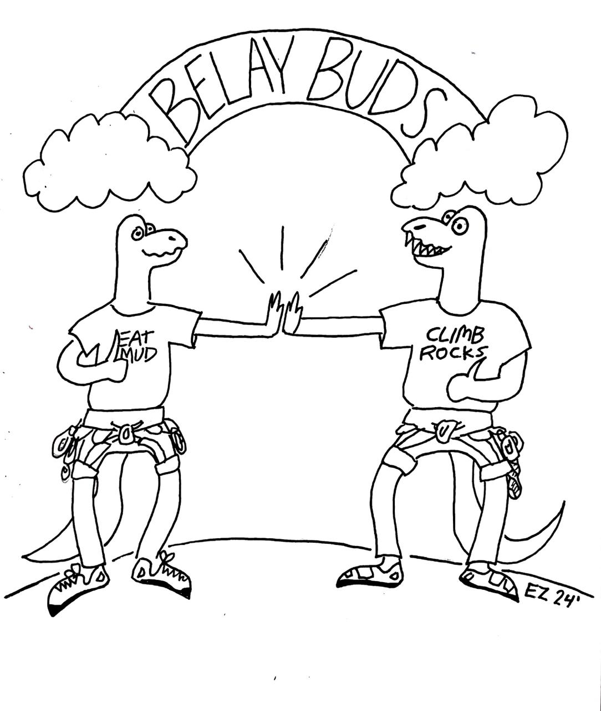
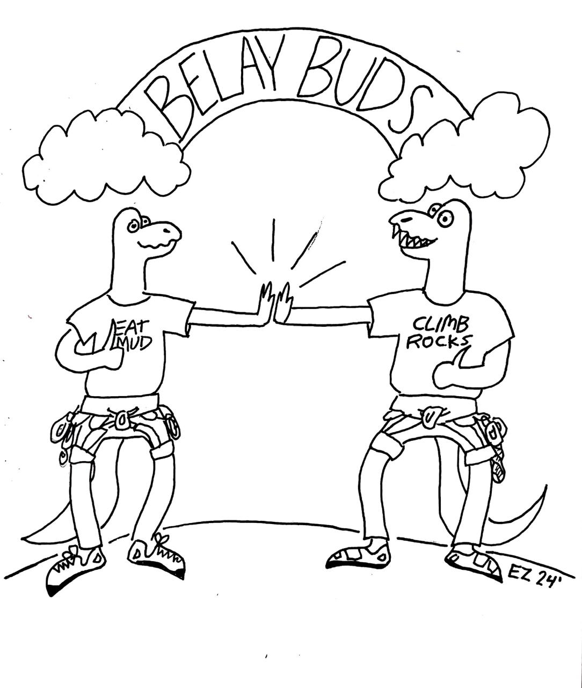
 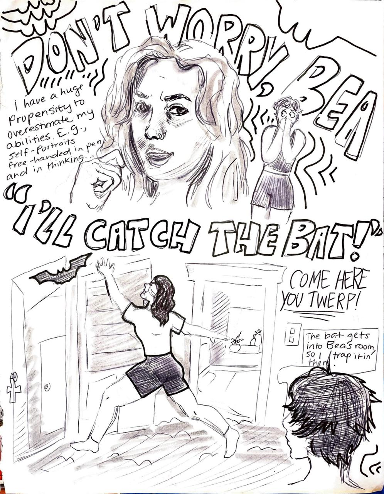
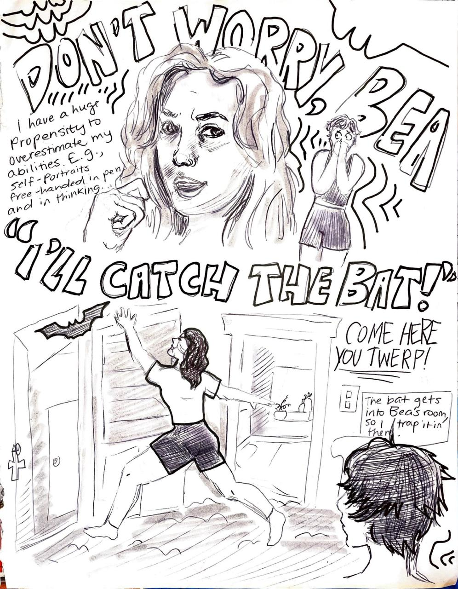


Photography

 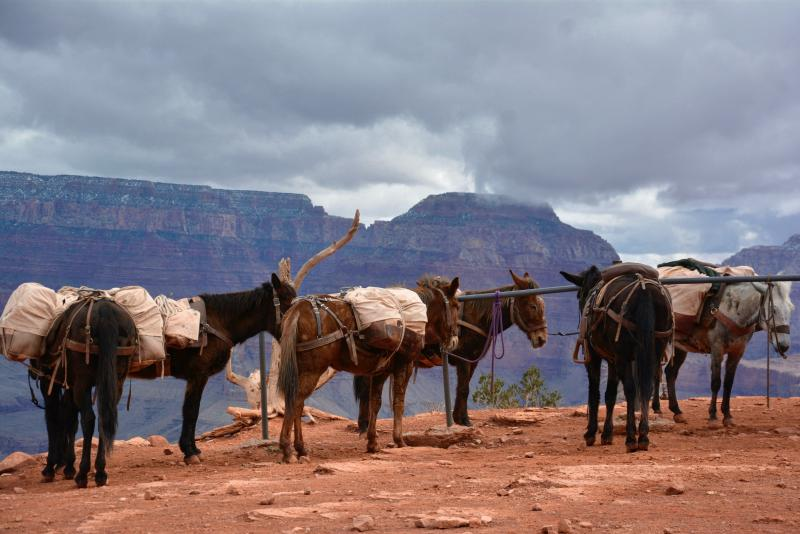
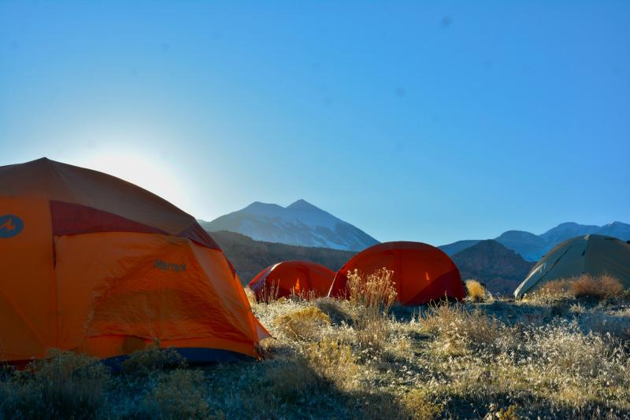
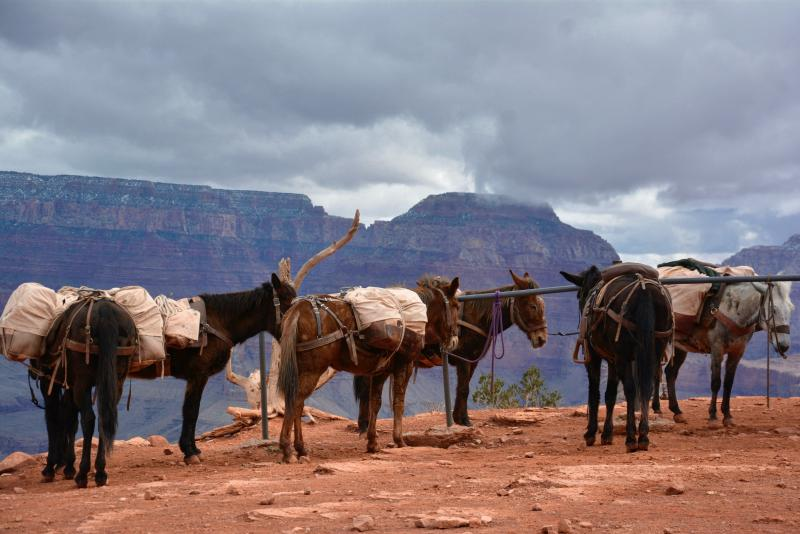
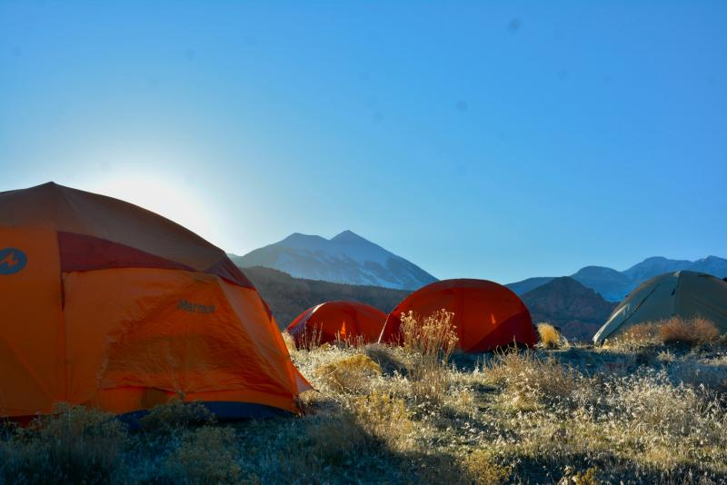